Adaptive Educational Text Simplification using LLMs
Streamlit interface, Gemini pipeline, verification checks and a first real experiment: what was built, what was measured, and what is still open.
1. Summary
The project rewrites educational text at three levels (Beginner, Intermediate, Advanced) and checks every result before showing a verdict.
A Streamlit interface lets a user paste or upload text, compare the original with the rewrite, and see which checks ran, what the metrics are and whether anything failed.
A Gemini-based pipeline does the rewriting and the review. A first experiment ran 24 real simplifications (8 passages × 3 levels) with
gemini-3.5-flash-lite.
results/experiment_gemini-3.5-flash-lite.jsonl.2. What was built
- Interface (
app.py,ui/): input and file upload, level selector, side-by-side texts with a word-level diff, verification table, metrics, session history, TXT and JSON export. Missing values show as N/A, and a result is never shown as verified unless checks actually ran. - Backend adapter (
services/backend_adapter.py): the only file that talks to the pipeline. It validates every response, caps retries, reuses verified results and can show clearly labelled demo data when the quota runs out. - Pipeline (
pipeline/): level-specific prompts, local preservation checks, a Gemini factuality and meaning review, retries with feedback, Flesch readability and embedding similarity. - Quota handling: 429 errors are read for the wait time and retried once only when short; all retries share one budget of three requests per run; Gemini reviews are skipped when a local check already failed. A run uses 4 requests at best and 8 at worst.
- Tests: automated tests cover the adapter, parser, exports, history, backend, caching, fallback, runner and the app itself.
3. How a result is checked
| Check | Type | What it does |
|---|---|---|
| Numbers, names, and technical terms | Local | Numbers, capitalised names and hyphenated terms from the source must appear in the output. |
| Output length sanity | Local | The output must not be empty or absurdly long. |
| Simplification effect | Local | Beginner and Intermediate outputs must be measurably easier to read (readability or sentence length). Advanced has no target. |
| Model factuality review | Gemini | A second request asks whether any claim in the output is unsupported by the source. |
| Meaning preservation review | Gemini | The same review asks whether important meaning or qualifications were lost. |
PASS means every check passed. It says the text is faithful to the source and measurably easier to read. It does not prove that a learner understands it.
4. Experiment and results
Method
- Data: 8 short, non-sensitive passages written for the project (Biology, Chemistry, Civics, Economics, Geography, Health, History, Physics), each simplified at all three levels = 24 runs.
- Model:
gemini-3.5-flash-lite(embeddings:gemini-embedding-2-preview); prompt version2026-10-23.3. - Settings: one run per passage and level, no saved-result reuse and no demo fallback, so every number is real. Up to 3 generation attempts per run; 20 seconds between runs.
- Cost: 89 API requests and 192 seconds of run time in total. The runner is resumable and stops early if Gemini keeps failing.
- Reproduce:
experiments\run_experiments.py, thenexperiments\summarize.py, thenreports\build_report.py.
Results by level
| Level | Runs | PASS | FAIL | NOT RUN | No text | Readability, source to output | Mean change | Easier in | Similarity | Words out/in | Attempts | API requests |
|---|---|---|---|---|---|---|---|---|---|---|---|---|
| Beginner | 8 | 7 | 1 | 0 | 0 | 49.1 to 64.3 | 15.2 | 8 of 8 | 0.98 | 1.05x | 1.4 | 36 |
| Intermediate | 8 | 5 | 1 | 1 | 1 | 46.1 to 53.1 | 7.0 | 6 of 7 | 0.98 | 0.99x | 1.9 | 28 |
| Advanced | 8 | 7 | 0 | 1 | 0 | 49.1 to 0.7 | -48.4 | 0 of 8 | 0.96 | 0.88x | 1.1 | 25 |
Readability is Flesch Reading Ease (higher is easier). Similarity is (cosine + 1) / 2 on embeddings. "No text" means the run produced no usable output. Means use only runs that produced text.
Findings
- 23 of 24 runs produced text; 19 passed every check, 2 failed a check and 2 could not complete verification (a Gemini server error interrupted the run). 1 run produced no usable text at all.
- Beginner made text easier to read: mean Flesch Reading Ease rose from 49.1 to 64.3 (+15.2), easier in 8 of 8 runs. Intermediate improved less (+7.0, easier in 6 of 7).
- Advanced did not simplify by this measure: mean readability fell from 49.1 to 0.7. This follows from its prompt (concise, precise academic wording with the technical terms kept) and the fact that the Advanced level has no simplification target. It is a design question for the project, not a measurement error: the example below shows the actual text.
- Embedding similarity stayed high in every run that produced text: the means were 0.98 (Beginner), 0.98 (Intermediate) and 0.96 (Advanced). Because the score is (cosine + 1) / 2, values near 1 are expected, and similarity does not prove that the meaning or the facts were kept.
- Intermediate often returned text that was unchanged or empty: All 5 MODEL_OUTPUT_INVALID errors (the model returned empty or unchanged text) occurred at the Intermediate level. In one run all three attempts did, so no text was produced.
- Both FAIL results are probably false alarms: the local check for numbers and terms failed because the model wrote numbers as words ("seven to nine" instead of "7 and 9", "two percent" instead of "2 percent"). The meaning was kept. The checker should treat number words as equal to digits; it was not changed during the experiment so the results stay valid.
Example: the same passage at two levels
All 24 runs
| Passage | Level | Status | Readability in | out | Similarity | Words | Attempts | Errors |
|---|---|---|---|---|---|---|---|---|
| biology_photosynthesis | Beginner | PASS | 20.3 | 42.8 | 0.98 | 48 to 51 | 2 | - |
| biology_photosynthesis | Intermediate | PASS | 20.3 | 41.8 | 0.97 | 48 to 49 | 1 | - |
| biology_photosynthesis | Advanced | PASS | 20.3 | 8.0 | 0.98 | 48 to 48 | 1 | - |
| chemistry_atoms | Beginner | PASS | 44.4 | 56.6 | 0.97 | 61 to 67 | 1 | - |
| chemistry_atoms | Intermediate | PASS | 44.4 | 48.5 | 0.98 | 61 to 59 | 2 | - |
| chemistry_atoms | Advanced | PASS | 44.4 | 14.4 | 0.96 | 61 to 55 | 1 | - |
| civics_democracy | Beginner | PASS | 48.6 | 56.3 | 0.98 | 58 to 59 | 1 | - |
| civics_democracy | Intermediate | PASS | 48.6 | 47.4 | 0.99 | 58 to 54 | 1 | - |
| civics_democracy | Advanced | PASS | 48.6 | -23.3 | 0.94 | 58 to 47 | 1 | - |
| economics_inflation | Beginner | PASS | 55.0 | 76.8 | 0.98 | 59 to 60 | 1 | - |
| economics_inflation | Intermediate | FAIL | 55.0 | 58.8 | 0.98 | 59 to 57 | 3 | MODEL_OUTPUT_INVALID,VERIFICATION_FAILED |
| economics_inflation | Advanced | PASS | 55.0 | -4.2 | 0.95 | 59 to 53 | 1 | - |
| geography_nile | Beginner | PASS | 59.9 | 76.0 | 0.99 | 65 to 68 | 1 | - |
| geography_nile | Intermediate | NOT RUN | 59.9 | 66.5 | 1.00 | 65 to 66 | 2 | MODEL_OUTPUT_INVALID,API_ERROR |
| geography_nile | Advanced | PASS | 59.9 | 1.2 | 0.97 | 65 to 47 | 1 | - |
| health_sleep | Beginner | FAIL | 42.9 | 72.0 | 0.96 | 54 to 60 | 3 | VERIFICATION_FAILED |
| health_sleep | Intermediate | PASS | 42.9 | 52.9 | 0.97 | 54 to 55 | 1 | - |
| health_sleep | Advanced | NOT RUN | 42.9 | -3.9 | 0.96 | 54 to 44 | 2 | API_ERROR |
| history_rome | Beginner | PASS | 51.7 | 54.0 | 0.99 | 75 to 80 | 1 | - |
| history_rome | Intermediate | PASS | 51.7 | 55.6 | 0.99 | 75 to 76 | 2 | - |
| history_rome | Advanced | PASS | 51.7 | -3.8 | 0.96 | 75 to 83 | 1 | - |
| physics_boiling | Beginner | PASS | 70.3 | 80.3 | 0.99 | 81 to 83 | 1 | - |
| physics_boiling | Intermediate | NOT RUN | 70.3 | N/A | N/A | N/A to N/A | 3 | MODEL_OUTPUT_INVALID,MODEL_OUTPUT_INVALID,MODEL_OUTPUT_INVALID |
| physics_boiling | Advanced | PASS | 70.3 | 17.3 | 0.97 | 81 to 64 | 1 | - |
5. Limitations
- One model (gemini-3.5-flash-lite), one run per passage and level, 8 short passages: too small to draw statistical conclusions.
- The default model gemini-3.8-flash and gemini-3.5-flash were overloaded (HTTP 503/504) on the day of testing, which is why the lite model was used.
- Flesch Reading Ease and embedding similarity are automatic proxies. They do not prove that a learner understood the text. No human evaluation has been done yet.
- Gemini reviews its own output with the same model family, so its verdicts may share the model's blind spots.
- The passages were written for this project and are short general-knowledge texts; results on textbook or specialist material may differ.
- Free-tier Gemini content may be used by Google to improve its products, so only non-sensitive text was sent.
6. Next steps
- Make the numbers check treat number words and digits as equal, then re-run the affected cases.
- Decide with the team what Advanced should mean, and whether it needs a different target than readability.
- Investigate why Intermediate returns unchanged text, for example by strengthening its prompt or retrying with feedback.
- Add a larger dataset, repeat each run several times, and compare against a plain one-shot prompt as a baseline.
- Add human evaluation (simplicity, meaning preservation, fluency) and report agreement between raters.
- Compare more than one model, including a locally run open model.
7. Interface screenshots
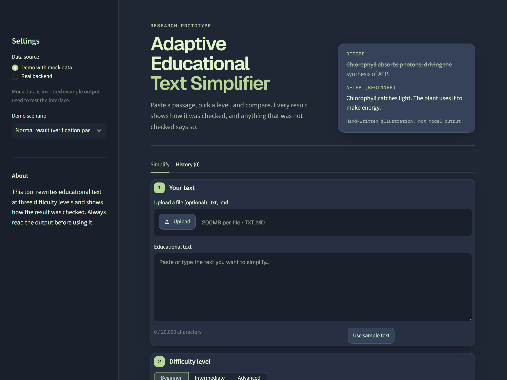
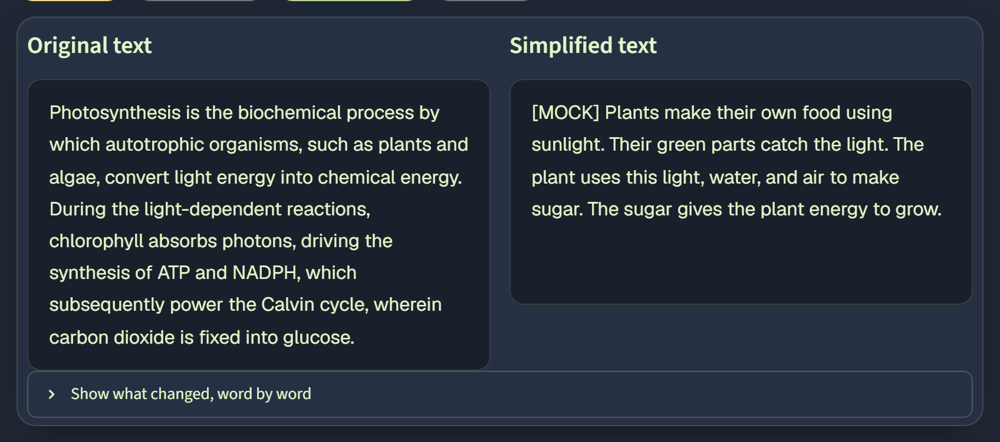
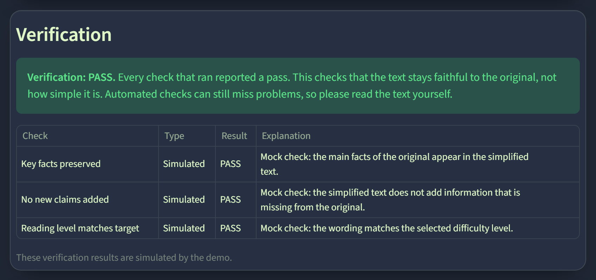
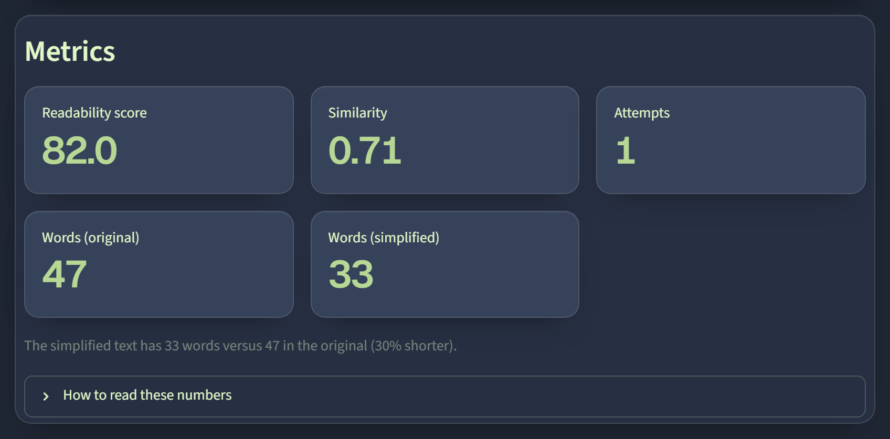
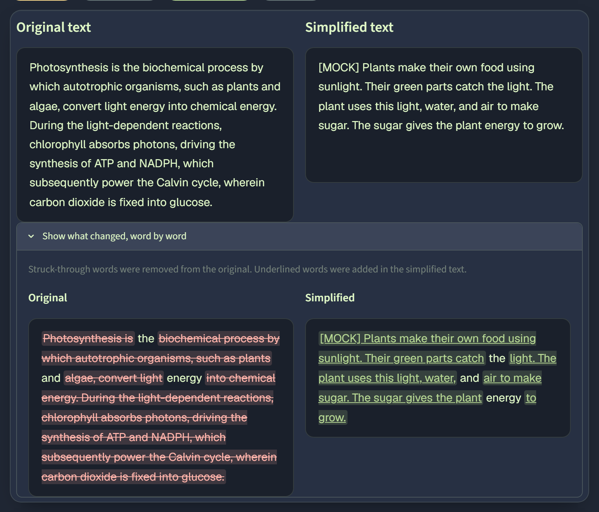
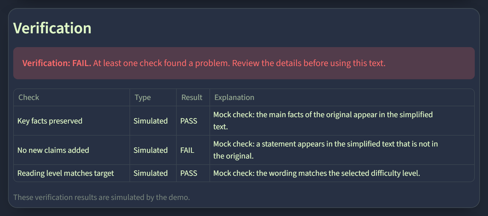
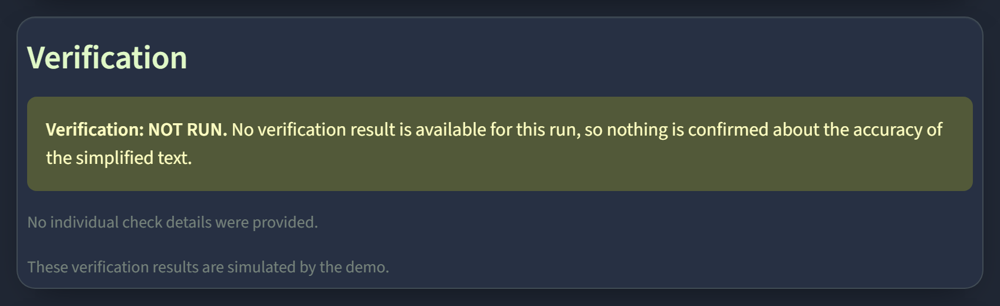
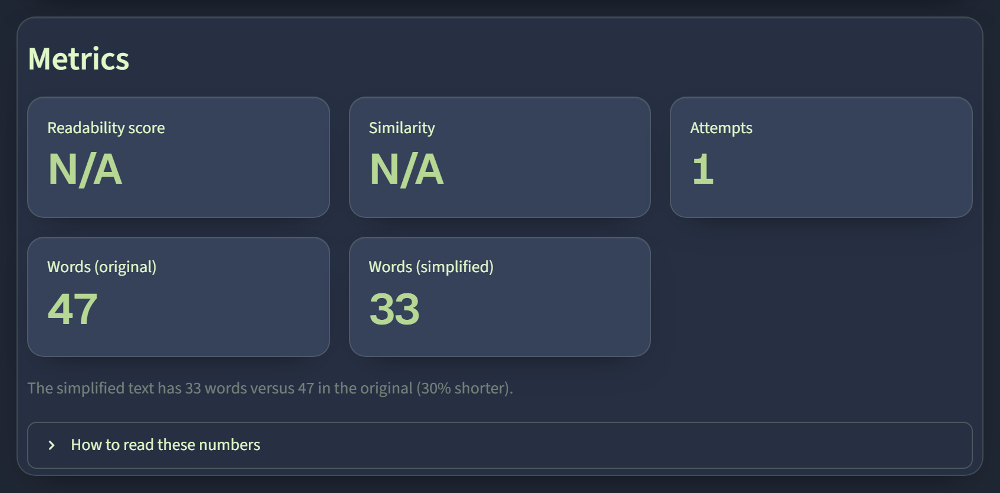
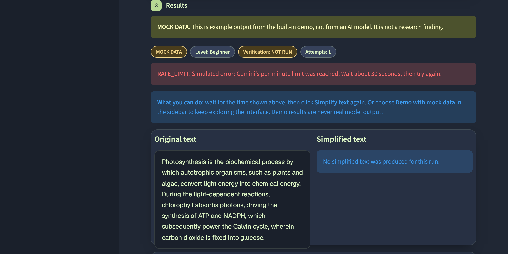
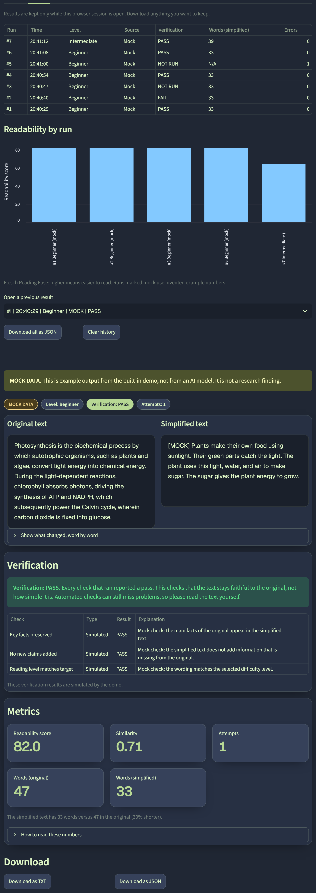
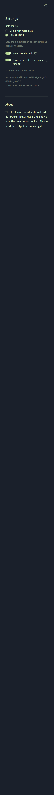
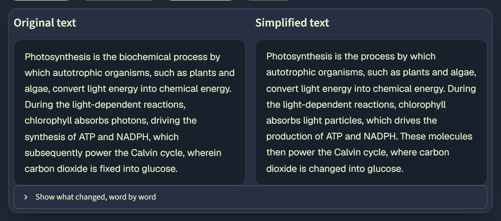
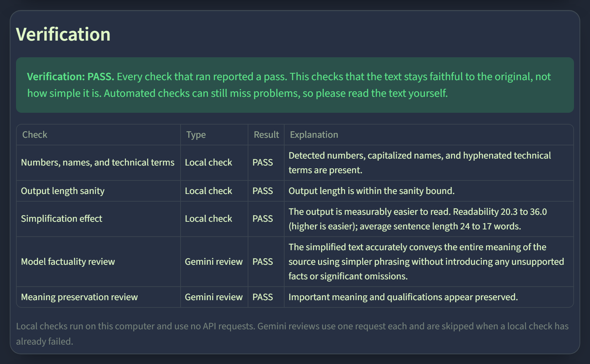
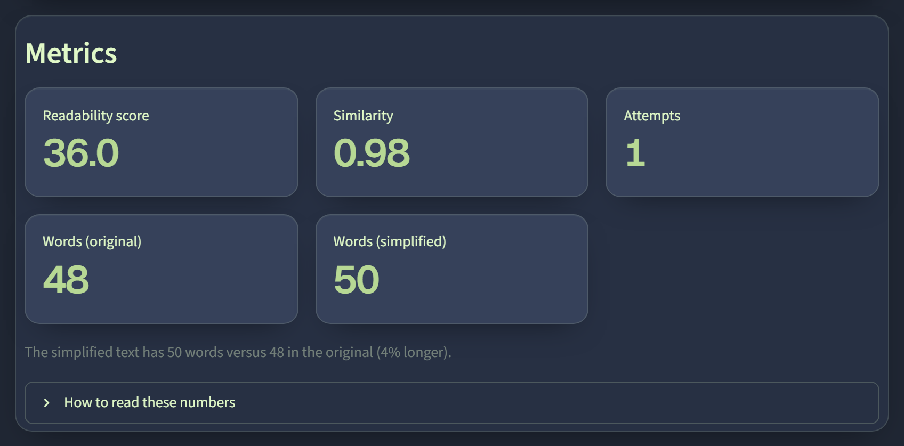
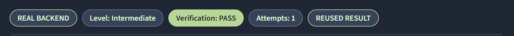
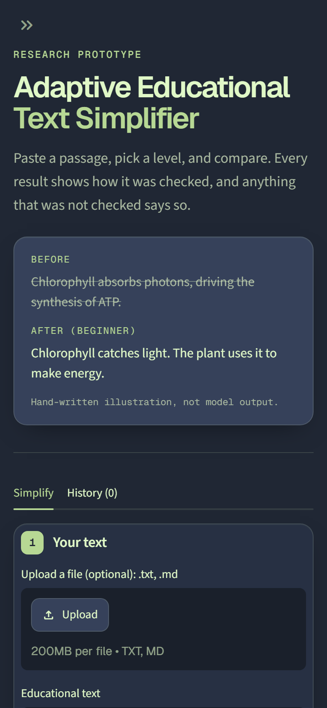
8. Run it yourself
python -m venv .venv .venv\Scripts\python -m pip install -r requirements.txt .venv\Scripts\python -m pip install -r pipeline\requirements.txt .venv\Scripts\python -m streamlit run app.py (demo works with no key) .venv\Scripts\python -m pytest
For the real backend, copy .env.example to .env and fill in the key yourself. The file is ignored by Git and is never shown or saved by the app.